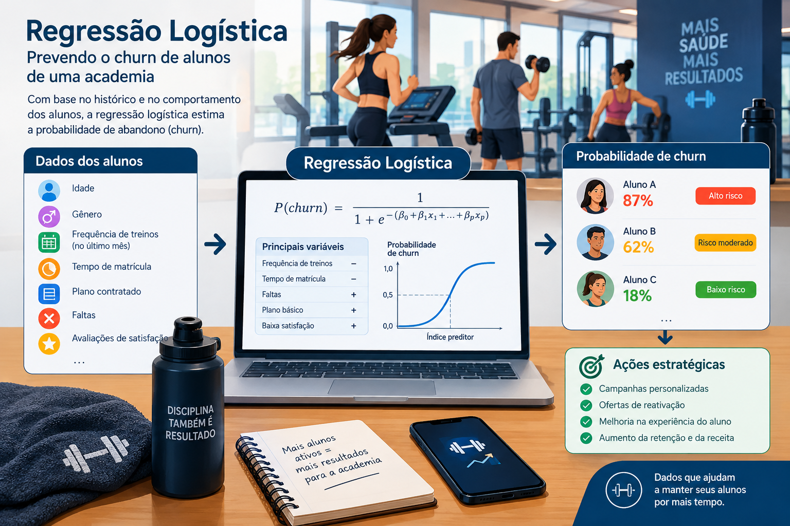
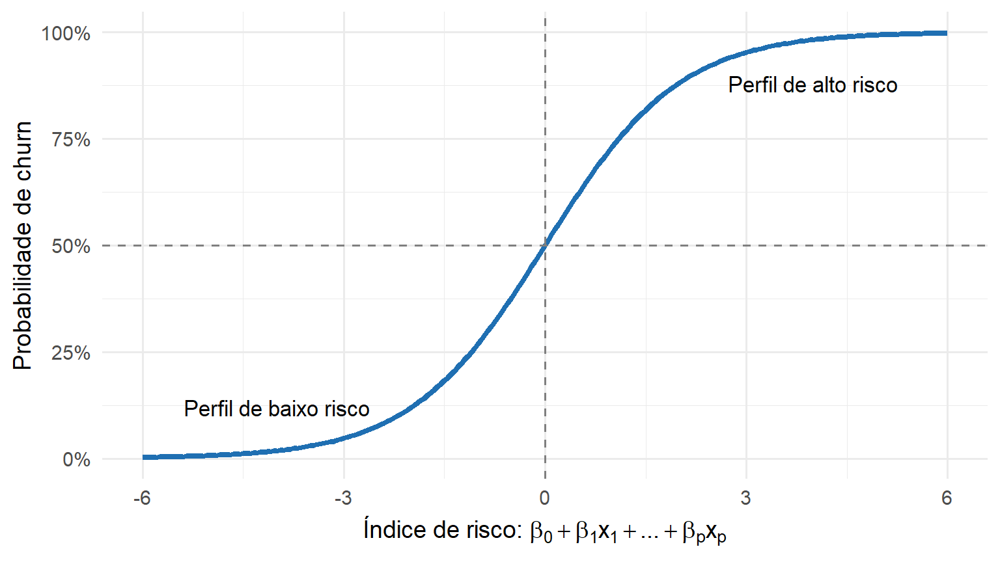
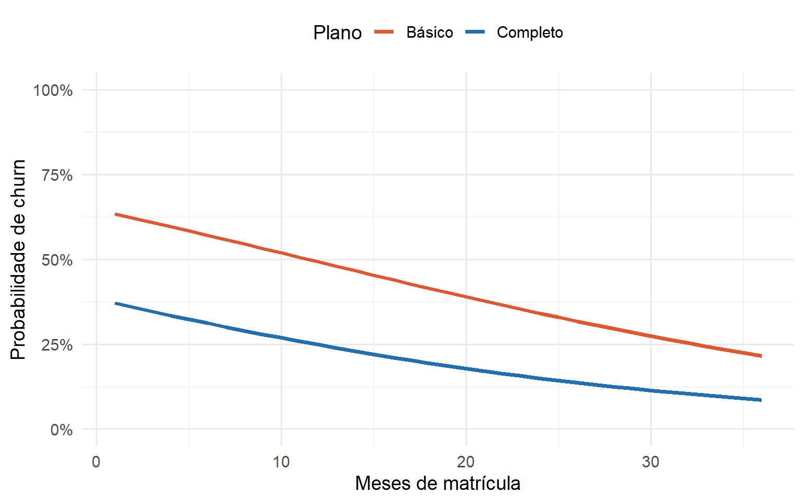
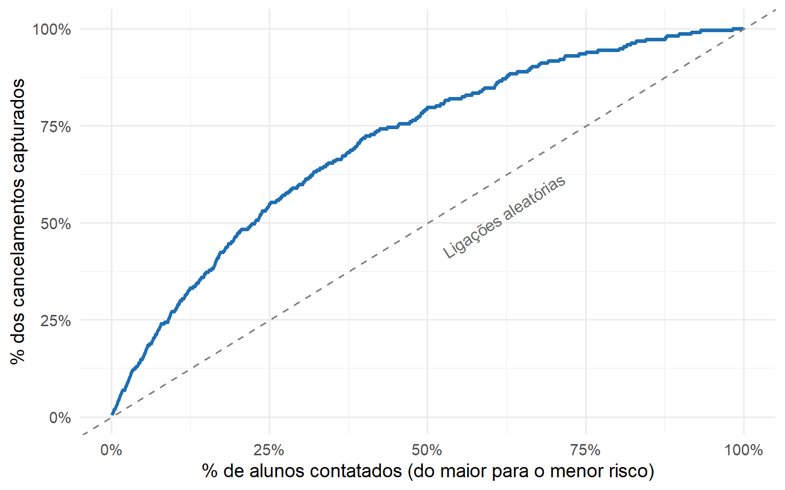

Quem Vai Cancelar a Matrícula? Prevendo Churn com Regressão Logística no R
Quem vai cancelar a matrícula? Construa do zero, em R, um modelo de regressão logística para prever churn e decida pelo custo-benefício quem vale a pena contatar.
r-code
regressão logística
churn
glm
marketing analytics
machine learning
alfabetização de dados
data literacy
estatística
Author
Jobenil Júnior
Published
October 17, 2026
Toda academia conhece esse filme: em janeiro, a recepção lota de gente cheia de promessas de Ano Novo. Em março, metade das fichas está parada na gaveta. E o pior: o aluno raramente avisa que vai sair. Ele simplesmente some, falta uma semana, depois duas, e um mês depois aparece no balcão (ou no aplicativo) pedindo o cancelamento. E se você pudesse olhar para a sua lista de alunos hoje e dizer: “Esta aqui tem 87% de chance de cancelar no próximo trimestre; aquele outro, só 18%”? É exatamente isso que a regressão logística faz. Hoje vamos construir, do zero e em R, um modelo de previsão de churn (evasão de clientes) e, no final, usar as probabilidades para decidir para quem vale a pena ligar antes que seja tarde.

No post sobre Regressão Logística Multinomial, aquele do iogurte, eu comentei que a regressão logística “tradicional” responde perguntas de sim ou não, como “o cliente vai cancelar o serviço?”. Pois bem: chegou a hora de mostrar essa versão com calma, do jeito que ela é usada no dia a dia das empresas.
🚪 O que é churn (e por que ele custa tão caro)
Churn (ou taxa de evasão) é a proporção de clientes que encerram o relacionamento com uma empresa em um determinado período. Se a sua academia começou o trimestre com 1.000 alunos e 250 cancelaram, o churn trimestral foi de 25%.
Ele aparece em todo lugar onde existe assinatura ou recorrência:
Negócio
Como o churn aparece
Academia
Aluno cancela a matrícula (ou simplesmente para de pagar)
Operadora de celular
Cliente faz portabilidade para a concorrente
Streaming
Assinante cancela depois que a série favorita acabou
Curso EAD
Aluno abandona antes de concluir o módulo
Banco digital
Correntista deixa a conta “às moscas” e migra
Existe uma regra de bolso famosa no marketing: conquistar um cliente novo custa várias vezes mais do que manter um cliente atual. Propaganda, comissão de vendas, matrícula com desconto… tudo isso é dinheiro gasto para colocar alguém para dentro. Quando esse alguém sai pela porta dos fundos três meses depois, o investimento vai embora junto.
Churn não é um evento; é uma probabilidade. E probabilidade a gente modela.
📏 Por que não usar a boa e velha regressão linear?
A nossa variável resposta é do tipo sim ou não: o aluno cancelou (1) ou continuou (0). A primeira tentação de quem já conhece regressão linear é jogar tudo no lm() e interpretar a previsão como “probabilidade”. Isso tem até nome: modelo de probabilidade linear. O problema aparece nas pontas.
Vamos ver isso na prática. Primeiro, simulamos os dados de uma academia fictícia (os detalhes da simulação estão mais abaixo, na seção dos dados):
O modelo linear previu uma “probabilidade” negativa para 174 alunos do conjunto de treino, chegando a -31%. O que significa ter uma chance negativa de cancelar? Nada! Probabilidade vive entre 0 e 1, e a reta não sabe disso. O gráfico abaixo mostra o problema usando só a frequência de treinos:
A reta vermelha atravessa o zero e segue descendo como se nada tivesse acontecido. A curva azul, a da regressão logística, vai se achatando e nunca sai do intervalo entre 0 e 1.
Usar regressão linear para prever “sim ou não” é como medir febre com uma régua: até funciona no meio, mas nas pontas dá resultado absurdo.
🧸 Imagine assim: a curva em S
A regressão logística pega aquela mesma reta da regressão linear e a “dobra” para que ela caiba entre 0 e 1. Quem faz essa dobra é a função logística:
Não se assuste com a fórmula. Pense em um dimmer de luz, aquele botão giratório que regula a intensidade da lâmpada. Ele não é um interruptor de liga/desliga: vai do apagado (0) ao totalmente aceso (1) aos poucos. Perto das pontas, você gira, gira, e quase nada muda. É no meio do caminho que cada giro faz mais diferença.
tibble(z =seq(-6, 6, by =0.05), p =plogis(z)) |>ggplot(aes(z, p)) +geom_line(color ="#1F6FB2", linewidth =1.5) +geom_hline(yintercept =0.5, linetype ="dashed", color ="grey50") +geom_vline(xintercept =0, linetype ="dashed", color ="grey50") +annotate("text", x =-4, y =0.12, label ="Perfil de baixo risco", size =4.5) +annotate("text", x =4, y =0.88, label ="Perfil de alto risco", size =4.5) +scale_y_continuous(labels = scales::percent) +labs(x =expression("Índice de risco: "* beta[0] + beta[1] * x[1] +"..."+ beta[p] * x[p]),y ="Probabilidade de churn") +theme_minimal(base_size =14)

No eixo horizontal está o “índice de risco” do aluno, uma soma ponderada das características dele. No eixo vertical, a probabilidade de cancelar. A curva em S garante que, por mais extremo que seja o aluno, a probabilidade nunca passa de 100% nem fica abaixo de 0%.
🎲 Chance, odds e log-odds: a linguagem da logística
Para entender os coeficientes da regressão logística, precisamos de um conceito que todo apostador conhece: as odds (às vezes traduzidas como “chance”). Quando a casa de apostas diz que um resultado “paga 3 para 1”, ela está falando de odds.
\[
\text{odds} = \frac{p}{1 - p}
\]
Probabilidade (p)
Odds = p / (1 − p)
Log-odds = ln(odds)
Leitura
0,50
1
0
“1 para 1”, tanto faz
0,75
3
1,10
“3 para 1” a favor de cancelar
0,20
0,25
−1,39
“1 para 4”, ou seja, 4 vezes mais provável ficar
0,90
9
2,20
“9 para 1” a favor de cancelar
O segredo da regressão logística é que ela modela os log-odds (o logaritmo das odds) como uma reta:
Por isso, os coeficientes que o R devolve estão na escala de log-odds, que ninguém consegue interpretar de cabeça. A tradução é simples: aplicamos a exponencial, exp(coef), e obtemos as odds ratios (razões de chances).
Coeficiente cru da logística é “língua de máquina”. Odds ratio é a tradução para gente.
🧪 Nossos dados: a Academia Fictícia
Os dados que simulamos lá em cima representam 3.000 alunos de uma academia, com as seguintes informações:
Variável
Tipo
Efeito que colocamos na simulação
meses_matricula
numérica (1 a 36 meses)
quanto mais tempo de casa, menor a chance de cancelar
treinos_mes
contagem (treinos no último mês)
quem treina mais, cancela menos
plano
Completo / Básico
plano Básico cancela mais
satisfacao
nota de 1 a 5
quanto mais satisfeito, menor a chance
idade
numérica (18 a 65 anos)
nenhum efeito (de propósito!)
churn
0 = continuou / 1 = cancelou
é o que queremos prever
A grande vantagem de simular os dados é que nós sabemos a resposta certa. Colocamos de propósito uma variável sem nenhum efeito (a idade) para ver se o modelo é esperto o suficiente para “desconfiar” dela.
Também dividimos os alunos em dois grupos: treino (70%), usado para ajustar o modelo, e teste (30%), guardado para avaliar se ele funciona com alunos que ele nunca viu. É como estudar pela lista de exercícios e depois fazer a prova com questões novas: se você só decorou a lista, a prova vai mostrar.
🧠 Ajustando o modelo com glm()
No R, a regressão logística é feita com a função glm() (Generalized Linear Model). O detalhe que transforma o glm em regressão logística é o argumento family = binomial:
modelo <-glm(churn ~ meses_matricula + treinos_mes + plano + satisfacao + idade,family = binomial, data = treino)summary(modelo)
Call:
glm(formula = churn ~ meses_matricula + treinos_mes + plano +
satisfacao + idade, family = binomial, data = treino)
Coefficients:
Estimate Std. Error z value Pr(>|z|)
(Intercept) 2.435744 0.316232 7.702 1.34e-14 ***
meses_matricula -0.052550 0.005649 -9.303 < 2e-16 ***
treinos_mes -0.203151 0.021594 -9.408 < 2e-16 ***
planoBásico 1.077048 0.119681 8.999 < 2e-16 ***
satisfacao -0.584102 0.050459 -11.576 < 2e-16 ***
idade 0.001720 0.004010 0.429 0.668
---
Signif. codes: 0 '***' 0.001 '**' 0.01 '*' 0.05 '.' 0.1 ' ' 1
(Dispersion parameter for binomial family taken to be 1)
Null deviance: 2350.8 on 2099 degrees of freedom
Residual deviance: 1958.2 on 2094 degrees of freedom
AIC: 1970.2
Number of Fisher Scoring iterations: 5
Como ler essa saída:
Estimate: o coeficiente na escala de log-odds. O sinal já diz muita coisa: negativo diminui a chance de cancelar; positivo aumenta. Repare que meses_matricula, treinos_mes e satisfacao são negativos, e planoBásico é positivo, exatamente como planejamos.
z value e Pr(>|z|): o teste de Wald, que verifica se o coeficiente é diferente de zero. Todas as variáveis têm p minúsculo, menos a idade (p = 0,67). O modelo “desconfiou” dela, como deveria!
Null deviance × Residual deviance: a deviance mede o quanto o modelo erra. A null deviance (2.350,8) é o erro de um modelo que só conhece a taxa geral de churn; a residual deviance (1.958,2) é o erro do nosso modelo. A queda mostra que as variáveis ajudam, e muito, a separar quem fica de quem sai.
tbl_regression( modelo,exponentiate =TRUE,label =list( meses_matricula ~"Meses de matrícula", treinos_mes ~"Treinos no último mês", plano ~"Plano", satisfacao ~"Satisfação (1 a 5)", idade ~"Idade (anos)" )) |>bold_p()
Characteristic
OR
95% CI
p-value
Meses de matrícula
0.95
0.94, 0.96
<0.001
Treinos no último mês
0.82
0.78, 0.85
<0.001
Plano
Completo
—
—
Básico
2.94
2.33, 3.72
<0.001
Satisfação (1 a 5)
0.56
0.50, 0.61
<0.001
Idade (anos)
1.00
0.99, 1.01
0.7
Abbreviations: CI = Confidence Interval, OR = Odds Ratio
A regra de leitura da odds ratio (OR) é simples:
OR
Significado
OR = 1
A variável não muda as chances de cancelar
OR > 1
Aumenta as chances de cancelar
OR < 1
Diminui as chances de cancelar
Traduzindo para a linguagem da gerência da academia:
Plano Básico (OR ≈ 2,94): as chances de um aluno do plano Básico cancelar são quase 3 vezes as de um aluno do plano Completo, mantidas as demais variáveis constantes.
Treinos no último mês (OR ≈ 0,82): cada treino a mais no mês reduz as chances de cancelar em cerca de 18%. Frequência é o melhor termômetro de engajamento!
Satisfação (OR ≈ 0,56): cada ponto a mais na nota de satisfação reduz as chances de cancelar em cerca de 44%.
Meses de matrícula (OR ≈ 0,95 por mês): parece pouco, mas o efeito se acumula. Por ano de casa, a OR é:
exp(12*coef(modelo)["meses_matricula"])
meses_matricula
0.5322755
Ou seja, cada ano a mais de matrícula reduz as chances de cancelar em quase 47%.
Idade (OR ≈ 1,00, IC 95% de 0,99 a 1,01): o intervalo de confiança cruza o 1. Não há evidência de que a idade influencie o cancelamento, que é exatamente a verdade que colocamos na simulação.
⚠️ A pegadinha: odds ratio não é “risco X vezes maior”
Esse é o erro mais comum em relatórios, artigos e até em notícias de jornal. Dizer que o plano Básico tem OR = 2,94 não significa que a probabilidade de cancelar é 2,94 vezes maior. Veja:
Probabilidade no plano Completo
Odds no Completo
Odds no Básico (× 2,94)
Probabilidade no Básico
Quantas vezes maior?
10%
0,111
0,327
24,6%
2,5 vezes
40%
0,667
1,960
66,2%
1,7 vezes
A mesma odds ratio produz aumentos de probabilidade diferentes, dependendo de onde o aluno está na curva em S. (Para falar em pontos percentuais de forma rigorosa existem os efeitos marginais, assunto para um próximo post.)
Odds ratio diz a direção e a força do efeito. Para falar em probabilidade, olhe as probabilidades previstas.
🔮 Do coeficiente à probabilidade: predict(type = “response”)
O grande produto da regressão logística é a probabilidade prevista para cada aluno. Ela vem da função predict(), com um detalhe que derruba muito iniciante: sem o argumento type = "response", o R devolve os log-odds; com ele, devolve a probabilidade.
Vamos conhecer três alunos da academia, a Ana, o Bruno e a Carla:
# A tibble: 3 × 7
nome meses_matricula treinos_mes plano satisfacao idade prob_churn
<chr> <dbl> <dbl> <chr> <dbl> <dbl> <chr>
1 Ana 2 2 Básico 2 24 87%
2 Bruno 6 5 Básico 3 35 62%
3 Carla 12 8 Completo 3 47 18%
Ana chegou há 2 meses, foi só 2 vezes à academia no último mês, está no plano Básico e deu nota 2 de satisfação: 87% de chance de cancelar. Alto risco!
Bruno está há 6 meses, treinou 5 vezes no último mês, plano Básico e satisfação mediana: 62%. Risco moderado.
Carla está há um ano, treina duas vezes por semana e tem o plano Completo: 18%. Baixo risco.
Para enxergar o efeito de forma contínua, fixamos um “aluno típico” (6 treinos no mês, satisfação 3, 35 anos) e variamos o tempo de matrícula e o plano:
grade <-expand_grid(meses_matricula =1:36,plano =c("Completo", "Básico"),treinos_mes =6,satisfacao =3,idade =35)grade$prob <-predict(modelo, newdata = grade, type ="response")ggplot(grade, aes(meses_matricula, prob, color = plano)) +geom_line(linewidth =1.3) +scale_y_continuous(labels = scales::percent, limits =c(0, 1)) +scale_color_manual(values =c("Completo"="#1F6FB2", "Básico"="#E4572E")) +labs(x ="Meses de matrícula", y ="Probabilidade de churn", color ="Plano") +theme_minimal(base_size =14) +theme(legend.position ="top")

Um aluno típico do plano Básico, recém-matriculado, tem mais de 60% de chance de cancelar. No plano Completo, essa chance começa bem mais baixa. E, nos dois planos, o risco despenca com o tempo de casa: os primeiros meses são a zona de perigo.
🎯 O modelo acerta? Matriz de confusão e o paradoxo da acurácia
Chegou a hora da “prova”. Vamos calcular a probabilidade para os 900 alunos do conjunto de teste e classificar como “Cancela” todo mundo com probabilidade acima de 50%:
teste <- teste |>mutate(prob =predict(modelo, newdata = teste, type ="response"))matriz <-table(Previsto =factor(ifelse(teste$prob >=0.5, "Cancela", "Fica"), levels =c("Fica", "Cancela")),Real =factor(ifelse(teste$churn ==1, "Cancela", "Fica"), levels =c("Fica", "Cancela")))matriz
Real
Previsto Fica Cancela
Fica 634 140
Cancela 49 77
Essa tabela é a matriz de confusão. Dela saem as métricas mais usadas:
tibble( Métrica =c("Acurácia", "Sensibilidade", "Precisão", "Especificidade"),Pergunta =c("Quanto o modelo acertou no geral?","Dos que cancelaram, quantos o modelo pegou?","Dos que o modelo apontou, quantos cancelaram de fato?","Dos que ficaram, quantos o modelo reconheceu?"),Valor =c(sum(diag(matriz)) /sum(matriz), matriz["Cancela", "Cancela"] /sum(matriz[, "Cancela"]), matriz["Cancela", "Cancela"] /sum(matriz["Cancela", ]), matriz["Fica", "Fica"] /sum(matriz[, "Fica"]))) |>mutate(Valor = scales::percent(Valor, accuracy =0.1))
# A tibble: 4 × 3
Métrica Pergunta Valor
<chr> <chr> <chr>
1 Acurácia Quanto o modelo acertou no geral? 79.0%
2 Sensibilidade Dos que cancelaram, quantos o modelo pegou? 35.5%
3 Precisão Dos que o modelo apontou, quantos cancelaram de fato? 61.1%
4 Especificidade Dos que ficaram, quantos o modelo reconheceu? 92.8%
Uma acurácia de 79% parece ótima, não parece? Agora olhe isto:
mean(teste$churn ==0)
[1] 0.7588889
Um “modelo preguiçoso”, que simplesmente diz que ninguém vai cancelar, acertaria 75,9% das vezes, sem fazer conta nenhuma! Esse é o paradoxo da acurácia: quando uma das classes é bem mais comum que a outra, acertar muito é fácil. E repare na sensibilidade: com o limiar de 50%, o modelo só “pega” cerca de 35% dos alunos que de fato cancelaram. Os outros 65% saem pela porta sem que ninguém da academia ligue para eles.
Acurácia sozinha engana. Em churn, a pergunta que importa é: quantos dos que iam sair nós conseguimos enxergar a tempo?
(Existe um gráfico que avalia o modelo em todos os limiares possíveis de uma só vez, a famosa curva ROC. Ela merece um post só para ela.)
💰 O limiar de 0,5 é uma convenção, não uma lei: deixe o dinheiro decidir
Aqui está, para mim, a parte mais importante do post. Ninguém disse que precisamos cortar em 50%. Esse número é só uma convenção. Quem deve escolher o limiar é a planilha de custos da academia.
Vamos supor (valores hipotéticos, adapte aos seus):
Parâmetro
Valor
Custo de uma ação de retenção (ligação + 1 mês de aula com personal de brinde)
R$ 50
Taxa de sucesso da ação entre os alunos que iam cancelar
30%
Valor de um aluno retido (cerca de 9 meses de mensalidade)
R$ 900
Se ligamos para um aluno com probabilidade p de cancelar, o ganho esperado é p × 0,30 × 900, e o custo é sempre R$ 50. Vale a pena ligar quando o ganho supera o custo:
\[
p \times 0{,}30 \times 900 > 50 \quad \Longrightarrow \quad p > \frac{50}{270} \approx 0{,}185
\]
Ou seja: pela lógica do negócio, devemos ligar para todo aluno com mais de 18,5% de chance de cancelar, e não só para os que passam de 50%! Vamos conferir no conjunto de teste, calculando o lucro da campanha para cada limiar possível:
custo_contato <-50taxa_sucesso <-0.30valor_aluno <-900limiar_teorico <- custo_contato / (taxa_sucesso * valor_aluno)lucro <-function(limiar) { alvo <- teste$prob >= limiarsum(alvo & teste$churn ==1) * taxa_sucesso * valor_aluno -sum(alvo) * custo_contato}curva_lucro <-tibble(limiar =seq(0.05, 0.90, by =0.01)) |>mutate(lucro =map_dbl(limiar, lucro))ggplot(curva_lucro, aes(limiar, lucro)) +geom_line(color ="#1F6FB2", linewidth =1.3) +geom_vline(xintercept = limiar_teorico, linetype ="dashed", color ="#2E9E5B") +geom_vline(xintercept =0.5, linetype ="dashed", color ="#E4572E") +annotate("text", x = limiar_teorico +0.01, y =5000, hjust =0,label ="Limiar do negócio (18,5%)", color ="#2E9E5B", size =4.2) +annotate("text", x =0.51, y =21000, hjust =0,label ="Limiar convencional (50%)", color ="#E4572E", size =4.2) +scale_x_continuous(labels = scales::percent) +scale_y_continuous(labels = scales::label_dollar(prefix ="R$ ", big.mark =".",decimal.mark =",")) +labs(x ="Limiar de probabilidade para ligar", y ="Lucro esperado da campanha") +theme_minimal(base_size =14)
Com o limiar convencional de 50%, a campanha renderia cerca de R$ 14,5 mil. Com o limiar definido pelo negócio, cerca de R$ 23,9 mil: um ganho de quase 65%, usando o mesmo modelo, só mudando a régua de decisão. E ligar para todo mundo, sem modelo nenhum, renderia apenas R$ 13,6 mil, porque gastaríamos dinheiro com centenas de alunos que nunca iam sair.
Outra forma de ver o valor do modelo é a curva de ganho: ordenamos os alunos do maior para o menor risco e perguntamos “se eu ligar só para os X% do topo da lista, quantos dos cancelamentos eu capturo?”
ganho <- teste |>arrange(desc(prob)) |>mutate(pct_contatados =row_number() /n(),pct_churn_capturado =cumsum(churn) /sum(churn))ggplot(ganho, aes(pct_contatados, pct_churn_capturado)) +geom_line(color ="#1F6FB2", linewidth =1.3) +geom_abline(slope =1, intercept =0, linetype ="dashed", color ="grey50") +annotate("text", x =0.62, y =0.52, label ="Ligações aleatórias", color ="grey40",size =4.2, angle =33) +scale_x_continuous(labels = scales::percent) +scale_y_continuous(labels = scales::percent) +labs(x ="% de alunos contatados (do maior para o menor risco)",y ="% dos cancelamentos capturados") +theme_minimal(base_size =14)

Ligando para apenas 20% dos alunos (os de maior risco), capturamos quase metade de todos os cancelamentos. Se as ligações fossem feitas ao acaso, os mesmos 20% de ligações capturariam só 20% dos cancelamentos (a linha tracejada).
O modelo entrega uma fila de prioridade. Quem decide onde cortar a fila é a planilha de custos.
⚠️ Cuidados antes de levar para a vida real
Cuidado
Por quê
Vazamento de informação
Não use variáveis que só existem depois do cancelamento (ex.: “pediu o boleto de quitação”). O modelo fica perfeito no papel e inútil na prática.
Associação não é causa
A OR da satisfação mostra associação. Ela não prova que aumentar a nota (ex.: pressionando o aluno a avaliar bem) vai reduzir o churn.
Classes raras
Se o churn for de 2%, e não de 25%, o paradoxo da acurácia fica ainda pior e exige técnicas específicas.
Horizonte de tempo
O nosso modelo responde “vai cancelar no trimestre?”. Se a pergunta for “quando vai cancelar?”, a ferramenta certa é a análise de sobrevivência.
O modelo envelhece
O comportamento dos alunos muda (nova concorrente no bairro, aumento de preço). Reajuste o modelo periodicamente.
🎯 Em resumo:
Pergunta
Ferramenta no R
Qual a chance de cada aluno cancelar?
glm(..., family = binomial) + predict(type = "response")
Quais fatores pesam mais?
exp(coef()) ou tbl_regression(exponentiate = TRUE)
O modelo acerta?
Matriz de confusão no conjunto de teste (e não só a acurácia!)
Para quem eu ligo?
Limiar definido por custo × benefício, e não pelo 0,5
A regressão logística transforma características dos clientes em probabilidades de churn, sempre entre 0 e 1.
Os coeficientes estão em log-odds; com exp() viram odds ratios, que dizem a direção e a força de cada fator.
Odds ratio não é “probabilidade X vezes maior”.
A acurácia pode enganar quando uma das classes é muito mais comum.
O melhor limiar de decisão vem do negócio, e pode valer milhares de reais a mais com o mesmo modelo.
Se quiser se aprofundar, o capítulo 4 (Classification) do livro An Introduction to Statistical Learning, de Gareth James, Daniela Witten, Trevor Hastie e Robert Tibshirani, é uma referência excelente e está disponível gratuitamente em statlearning.com. E se o seu problema tiver três ou mais opções em vez de “fica ou sai”, o próximo passo é o post do iogurte, sobre Regressão Logística Multinomial.
Lembra da academia lotada em janeiro e vazia em março? Com uma regressão logística, a gerente não precisa esperar março chegar. Ela recebe, toda semana, uma lista dos alunos que estão “sumindo”, com a probabilidade de cada um ir embora, e sabe exatamente até onde vale a pena descer nessa lista com o telefone na mão.
Isso, para mim, é a alfabetização de dados na veia!
EDA | TESTE T | ENQUETES | ANOVA | MODELOS DE REGRESSÃO | ANÁLISE FATORIAL | MODELAGEM DE EQUAÇÕES ESTRUTURAIS | TRI | RASCH MODELS | MACHINE LEARNING